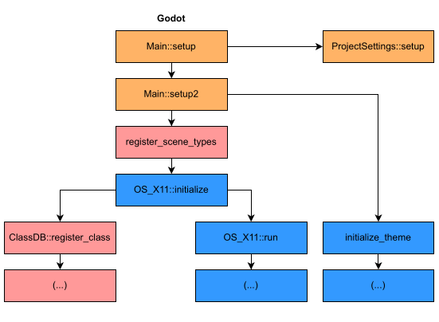
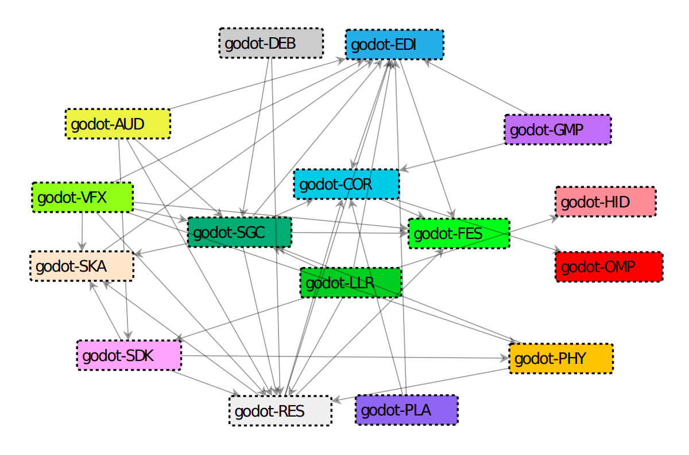

Software Architecture: What is the Recipe?
Published on 2023-03-15 by Gabriel C. Ullmann
A batch of muffins. Personal files.
In my first job as a programmer, I heard this mantra a lot: "the best documentation is the code". According to some of my colleagues at the time, well-written code not only has great performance but also accurately represents the meaning of business logic and decisions made by architects, analysts and programmers.
Although much repeated, this mantra never quite stuck in my head. I always felt that I needed a more visual representation of whatever I was coding. It was for these and other reasons that I left this team, from which I learned a lot, and went to explore new opportunities. Currently, I am in a different line of work: instead of developing software, I'm baking oatmeal muffins (like the ones in the photo, from a batch I baked last month).
Jokes aside, software architecture and modelling have always called my attention since I first set foot in a university. As a researcher and master's student, I now have the opportunity to dive headfirst into these disciplines. Currently, I study game engines, which are tools for creating games, and I apply several methods to represent the architecture of these systems in a more user-friendly way. In this way, we can understand and compare these systems more easily. In this post, I want to show what I've been doing lately and talk about software architecture as accessibly as possible.
However, for us to talk about software architecture simply, we must first find a good analogy. It should be something well-known to most people, and preferably tasty. What about cake? Let's imagine a freshly baked cake which just came out of the oven. Just by looking at it, can we tell what ingredients were used to prepare it? Kind of. By the colour, smell and taste, we can infer, for example, if it is a chocolate or banana cake. But we can't grasp all details with this kind of analysis. If we don't have the recipe, it is not possible to know the exact quantity of flour, eggs or sugar which were used to prepare the batter. We also can't know for sure how long the cake was in the oven, or whether some other specific process was performed.
We can observe a similar situation in software development. If a complex system was created, expanded and maintained by a large team, but its documentation was lost, the decisions that guide its development were also lost. By simply looking at the code, it is hard to tell what exactly a developer had in mind when they were writing a class or method. For this reason, software architecture recovery methods were created. Putting it simply, it is like reverse engineering: you take a system's code and extract for it a representation of its structure and the decisions taken throughout development. For example, I got the following call graph from the Godot Engine source code:
Godot game engine call graph. Responsibilities were highlighted with colours. Orange for initialization, pink for class registration and blue for subsystem calls, such as graphics rendering. Personal archives.
The image above shows all methods called by Godot during its initialization. But what is it good for? From the observation of the calls made by a program, we can infer each method's responsibility. In this image, responsibilities were highlighted with colours. Orange for initialization, pink for class registration and blue for subsystem calls, such as graphics rendering (which is fundamental in any game engine).
This graph (and many others) are in the paper Game Engine Comparative Anatomy, which I presented at IFIP-ICEC 2022. In this paper, I used dynamic analysis, or, in other words, I analysed the behaviour of the program while it was being executed. While interesting, this approach has one downside: you must compile and execute the program, which is not always possible for several reasons (which I explain in What I learned compiling open-source game engines).
When the dynamic analysis is not possible, we can do static analysis. In this approach, we compute quality metrics and search for patterns directly in the source code, with no execution needed. But what kind of patterns do we look for? Besides the well-known design patterns, we can seek to understand the responsibilities of a system through the observation of its files and folders. For example, I created this architectural model from Godot using Moose, a platform for software analysis:
Godot game engine architectural model. The coloured rectangles represent subsystems (modules) of the system.
Each coloured rectangle is a system module, and the arrows between them indicate dependency. For example, in Godot many modules depend on "RES". Why? This module is the centrepiece of the tool because it is used to load resources such as images, sounds and animation which are used by other modules, such as graphics rendering, audio playback and scene management.
The process to define which modules we will look for and how we will look for them has several steps, which begin with the study of specialized literature and end with careful source-code inspection and the generation of a Moose model. In case you would like to know more, you can read my paper An Exploratory Approach for Game Engine Architecture Recovery, which I will present at GAS 2023, a workshop which takes place with ICSE (International Conference of Software Engineering).
But how visualizations such as these can help developers? As people from biology say, it is all a matter of form and function. When you find yourself having to deal with a system you don't know much about, trying to give it form may help you understand its function. As explained Edward Tufte in his book "Visual and Statistical Thinking: Displays of Evidence for Making Decisions":
"Making decisions based on evidence requires the appropriate display of that evidence. Good displays of data help to reveal knowledge relevant to understanding mechanism, process and dynamics, cause and effect."
If you would like to know more about software architecture and visualizations, I recommend you the following reads. Some are more than 20 years old, but still fresh:
- Patterns of Enterprise Application Architecture (Martin Fowler, 2002)
- Software Architecture: Perspectives on an Emerging Discipline (Mary Shaw and David Garlan, 2000)
- Visual and Statistical Thinking: Displays of Evidence for Making Decisions (Edward T. Tufte, 1997)
- The Case for Research in Game Engine Architecture (Anderson et al., 2008)